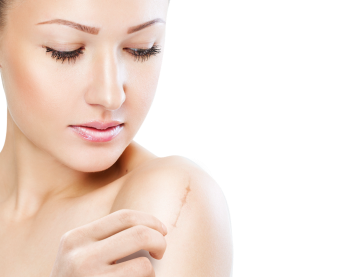

Native tTarget

Рубцы и шрамы мешают вам носить открытую одежду?
Гель Kelo-Cote®:
Нормализует процессы синтеза коллагена
Способствует улучшению вида келоидных и гипертрофических рубцов
Подходит для чувствительной кожи
Узнать больше
Имеются противопоказания. Перед применением необходимо проконсультироваться со специалистом
i
Реклама
Рубцы и шрамы мешают вам носить открытую одежду?
Гель Kelo-Cote®:
Нормализует процессы синтеза коллагена
Способствует улучшению вида келоидных и гипертрофических рубцов
Подходит для чувствительной кожи
Узнать больше
Имеются противопоказания. Перед применением необходимо проконсультироваться со специалистом